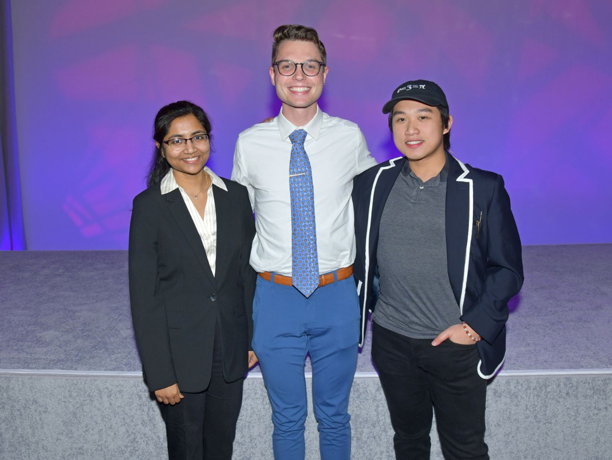
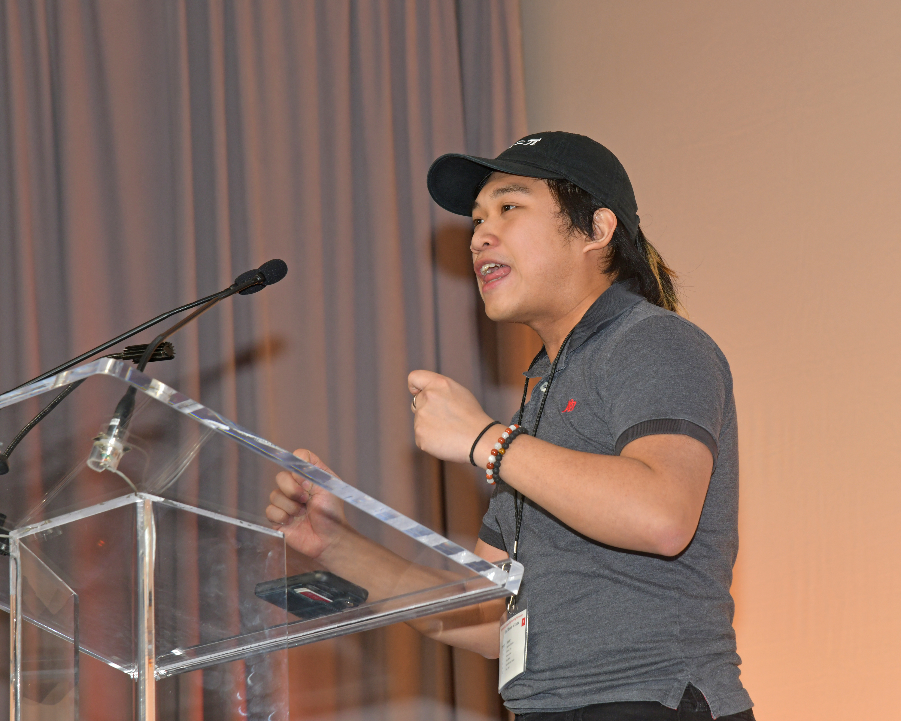
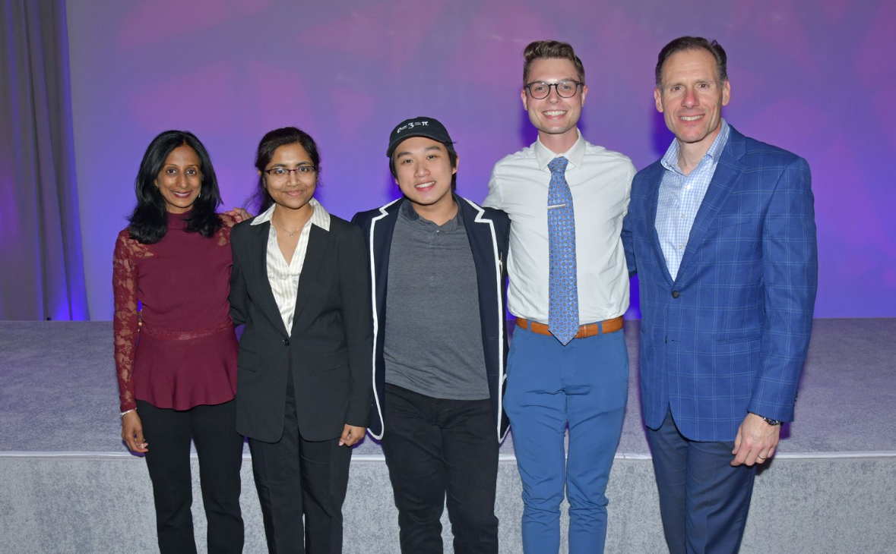
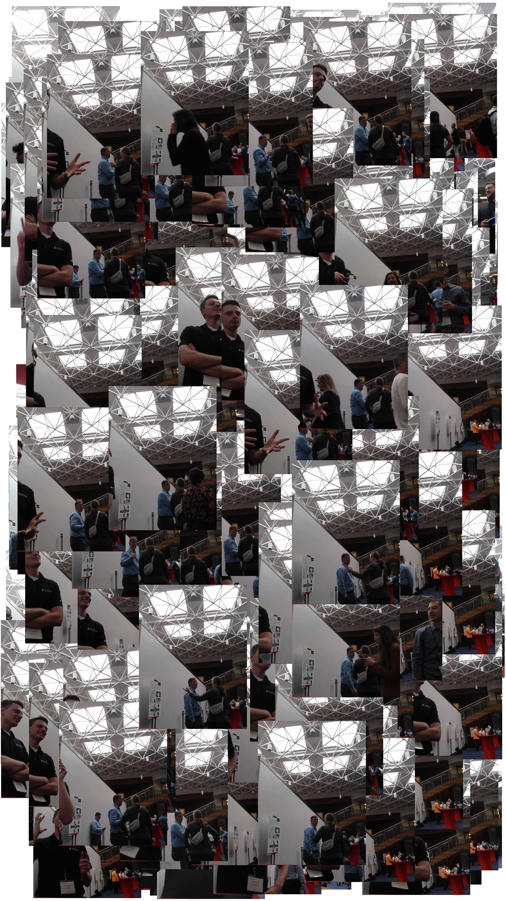

Johnson & Johnson Engineering Showcase




> The Johnson & Johnson Engineering Showcase is an annual gathering of J&J engineers, discussing their current breakthroughs, research projects, and infrastructural plans.
> I was invited to speak about science communication on YouTube. My goal was to convey the importance of instilling inspiration into the youth. The future is in the hands of the next generation, and it's up to their predecessors to get them excited for STEM.
> I was able to connect to many people and fellow university students at the event. I also demonstrated an interactive program I wrote in Python that used openCV to track hand gestures. When a peace sign is recognized, a snapshot will be taken and placed somewhere random on an image canvas.